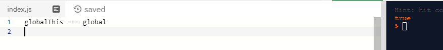

ES2020 features
Hello everyone! Today we are going to talk quickly about all ECMAScript2020 Features in 8 minutes.
ES2020 is new version of Javascript that officially became part of JS this year.
BigInt
Nullish Coalescing operator
Optional Chaining(Elvis operator)
Promise.allSettled
globalThis
Dynamic import()
String.prototype.matchAll
For-in order mechanics
import.meta
export * as ns from "mod"
Take a look through the list of ES2020 Features. You may have already used some of them, but now they are officially part of JavaScript.
Big Int
Now you can feel free to use numbers larger than 253 -1 in your JS code.
To use this feature you should append "n" to your number like that:
let num=Number.MAX_SAFE_INTEGER
console.log("result:", ++num)
result: 9007199254740992
console.log("result:", ++num)
result: 9007199254740992
console.log("result:", ++num)
result: 9007199254740992
let number=9007199254740999n;
console.log("result:",++number);
result: 9007199254741000n
number*=2n;
console.log("result:",number);
result: 18014398509482000n
BigInt,allows developers to have much greater integer representation in their JS code
for data processing for data handling. At the moment the maximum number you can store as an integer in JavaScript is
253 -1(2 to 53 degrees minus 1)
Nullish Coalescing
Nullish coalescing adds the ability to truly check nullish values instead of falsey values.
Example with '??'
In JavaScript, a lot of values are falsey, like empty strings, the number 0, undefined, null, false, NaN, and so on.
However, a lot of times you might want to check if a variable is nullish – that is if it is either undefined or null,
like when it's okay for a variable to have an empty string, or even a false value.
Example with '||'
You can see the difference between || and ?? operators.
Optional Chaining
Optional chaining syntax allows us to access deeply nested object properties without worrying if the property exists or not.
If property exists, we'll get expected value, else undefined will be returned.
Promise.allSettled
Promise.allSettled returns a promise that’s fulfilled with an array of promise state snapshots,
but only after all the original promises have settled
Promise.allSettled returns a promise that’s fulfilled with an array of promise state snapshots,
but only after all the original promises have settled. Promise is settled if it is not pending(resolved or rejected)
globalThis
globalThis feature will help us to write cross-platform code which could run on Node, in the browser environment, and also inside web-workers.

globalThis feature will help us to write cross-platform code which could run on Node, in the browser environment, and also inside web-workers.
You can have a problem with getting global object(global for Node,window for browsers, self for web-workers).
globalThis always refers to the global object, no matter where the code is executing.
Dynamic import
Dynamic import() returns a promise for the module namespace object of the requested module.
const moduleToImport = 'exampleModule.js';
const resp = import(moduleToImport).then( x => x.print('hi'));
(async function(){
const module = await import (moduleToImport);
module.print('hi,there');
});
if(exampleCondition){
const module = await import (moduleToImport);
module.print('hi,there2');
}
Dynamic import in JavaScript give you the option to import '.js' files dynamiclly as modules.
This is just like how you do it with Webpack and Babel at the moment.
This feature will help you with code splitting,without the webpack or other module bundlers.
Imports can now be assigned to a variable using async/await dynamically.
You can also conditionally load code in an if-else block if you need it.
For-in mechanics
The ECMA specification did not specify in which order for (const element in array) should run. Even though browsers implemented
a consistent order on their own before now, this has been officially standardized in ES2020.
The specification didn't specify the order in for-in loop. JavaScript engines came up with their own implementations,
but now order is standardized and defined in ES2020.
matchAll
matchAll matches all results and returns iterator agains a regex
const regexp = /(Hello )\w+/g;
const str = 'Hello World!,bye John Doe. Hello there=)';
const matches = str.matchAll(regexp);
console.log(Array.from(matches));
(2) [Array(2), Array(2)]
0: (2) ["Hello World", "Hello ", index: 0, input: "Hello World!,bye John Doe. Hello there=)", groups: undefined]
1: (2) ["Hello there", "Hello ", index: 27, input: "Hello World!,bye John Doe. Hello there=)", groups: undefined]
length: 2
__proto__: Array(0)
}
If you have a Regular Expression which matches a lot of occurences in a string then you should use matchAll method.
import.meta
console.log(import.meta); // { url: "file:///home/user/module.js" }
}
The import.meta object was created by the ECMAScript implementation, with a null prototype.
You can access meta information about the module using the import.meta object.
It returns an object with a url property indicating the base URL of the module.
Module Namespace Exports
import * as cards from './cards.js';
export * as cards from './cards.js';
export{cards};
}
In JavaScript modules, it was already possible to use import, but now we have symmetric export syntax.